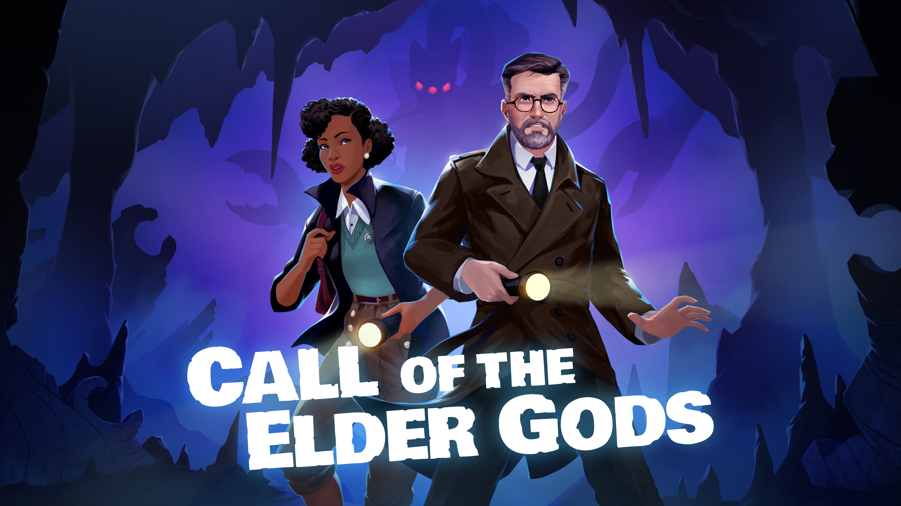
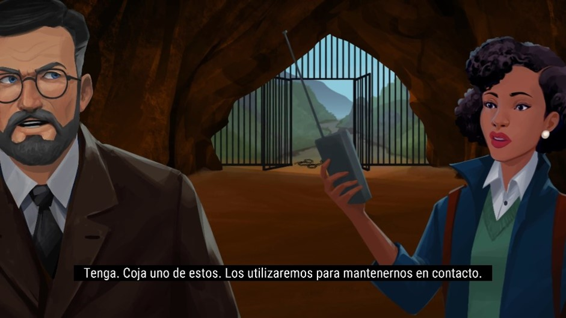
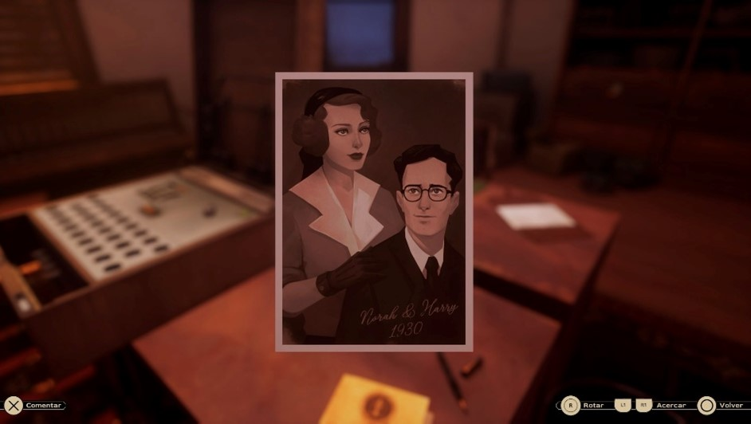
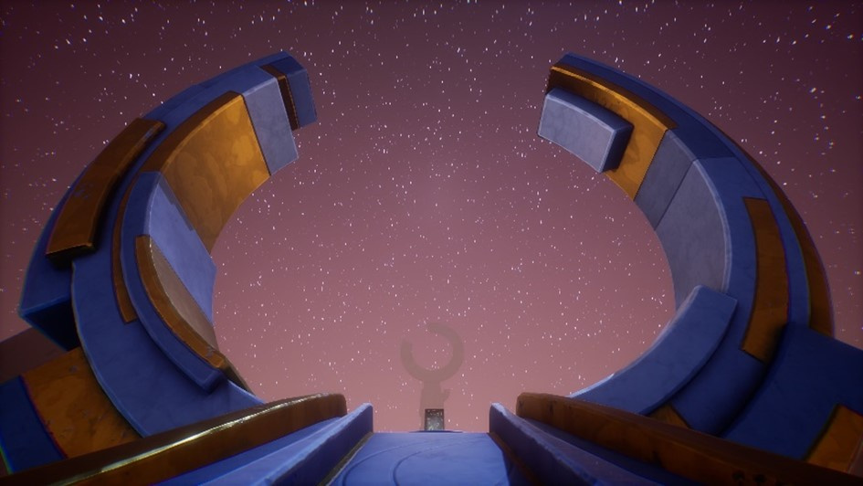
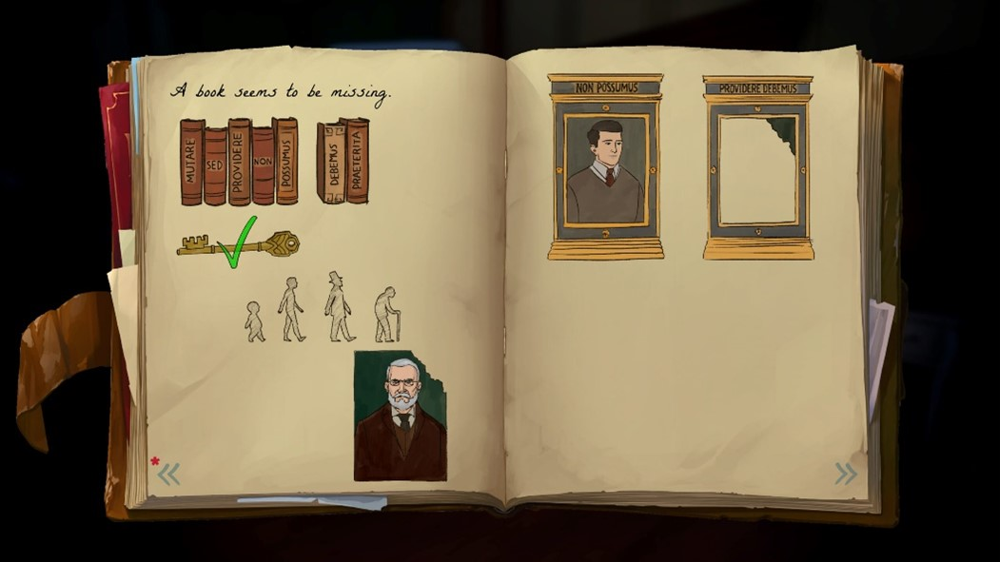
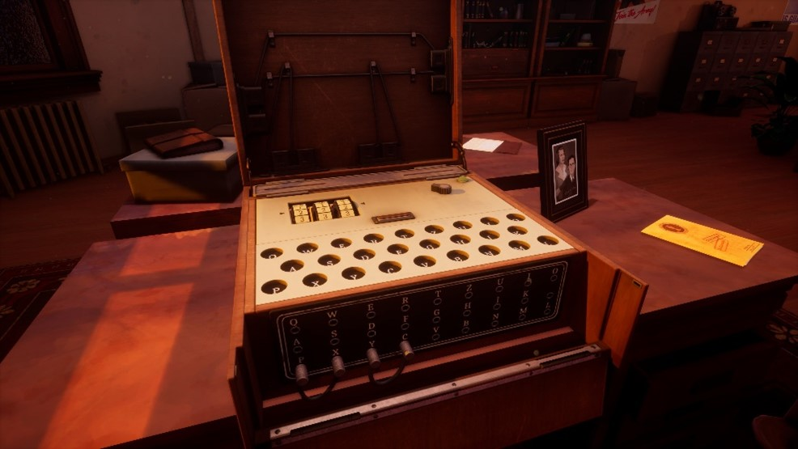

RESEÑA
Call of the Elder Gods

Voces: Inglés
Textos: Inglés, Español
Web: https://www.outbluegames.com/calloftheeldergods
Out of the Blue Games vuelve con Call of the Elder Gods, una aventura que continúa la historia de Call of the Sea.
De alguna forma, hasta yo mismo, que no soy un experto a nivel técnico, veo cierta evolución en el estudio, desde lo que vimos en Call of the Sea, pasando por American Arcadia, hasta lo visto en este juego que nos ocupa.
Por cierto, sigo también muy de cerca, el juego The Vigilante Diaries, que aún no tiene fecha de lanzamiento en el momento en el que escribo este artículo.
En Call of the Elder Gods, la historia se centra en Harry Everhart, un profesor de la Universidad de Miskatonic, que empieza a tener una serie de visiones de lo más perturbadoras, relacionadas con una especie de lodo negro.
Por otro lado, tenemos también a Evangeline Drayton, una alumna atormentada por unos sueños relacionados con un artefacto del pasado en forma de estatuilla.
Lo que comienza como una búsqueda de respuestas acaba derivando en algo mucho más grande, antiguo y también mucho más inquietante de lo que parecía en un principio.

Al inicio puede dar la sensación de que estamos ante una historia más centrada en la ciencia ficción, pero también es una historia de misterio con ciertos toques que rozan el horror. Además, se permite tocar otros elementos que no quiero desvelar demasiado por evitar spoilers, pero que le dan aún más contexto y profundidad a todo lo que está ocurriendo.
Nada más empezar, el juego te pregunta directamente si has jugado a Call of the Sea, algo que sirve para que no te pierdas detalles importantes, tanto si no lo jugaste como si hace tiempo que lo hiciste y no recuerdas bien la historia.
Aquí, además, tenemos a Norah Everhart como narradora, algo que refuerza aún más el vínculo entre ambos juegos.
¿Es necesario haber jugado Call of the Sea para enfrentarnos a este título? La respuesta corta es, no. Pero como siempre, si lo has jugado, encontrarás ciertos matices y referencias que, de otra forma, pasarían desapercibidos.
El juego tiene escenarios que, a nivel visual, pueden parecer agradables, gracias a ese estilo que se asemeja al cartoon y muy coloridos en algunos momentos, pero que al mismo tiempo transmiten una sensación constante de inquietud.
Eso funciona muy bien con el tipo de historia que plantea el juego, porque no hay que olvidar que estamos dentro de un universo inspirado en los mitos de Lovecraft.
Pero mantengamos la calma, el juego nunca se olvida de que pertenece a este universo y por tanto veremos todo tipo de referencias, en textos, conversaciones, cuadros, etc.
Y aunque la temática está clara, conviene remarcar que no es un juego de terror al uso, pero sí mantiene un tono de tensión y misterio prácticamente todo el tiempo.
Si algo siempre llama la atención de los juegos del estudio madrileño, es el apartado artístico, más potenciado en este título si cabe gracias al motor Unreal Engine 5.

Se nota que hay un salto respecto a Call of the Sea, sobre todo en la iluminación, en el nivel de detalle de los escenarios y en cómo todo en general se ve más definido y con más presencia en pantalla, sin perder ese estilo tan característico del estudio.
A pesar de que el juego es lineal, la sensación no siempre es esa. Los escenarios son lo suficientemente amplios como para que puedas moverte con libertad, explorar a tu ritmo y entender bien cada espacio.
No da la sensación de estar avanzando por zonas cerradas, sino de recorrer lugares que tienen cierta coherencia y que invitan a la investigación y, creedme, algún que otro objeto escondido encontraréis si sois tan curiosos como yo.
Por poner un ejemplo, en el segundo capítulo, en las cuevas que visitamos, ya se percibe que no es un pequeño espacio donde movernos, sino que da la impresión de estar ante un escenario realmente grande, tanto en lo superficial como en lo más profundo (y hasta ahí puedo leer).
No disponemos de un inventario como tal, pero en ocasiones usaremos algún objeto que hayamos adquirido para resolver el puzle de turno.
Cabe destacar también que, para hacer algo más dinámico el juego en su apartado narrativo, este nos da opciones de respuesta en algunas conversaciones. Podremos elegir cómo reaccionar y eso mantiene una sensación constante de estar participando de la historia en todo momento.
Para hablar de la dificultad, trataremos el tema de los puzles, el punto fuerte del juego, al menos en mi opinión. Están bien integrados en la narrativa y en los escenarios, y la curva de dificultad va in crescendo a medida que avanzamos por los diferentes capítulos.
Cierto es que algunos, pese a ser más complejos, se os pueden dar mejor. A mí, por ejemplo, se me atragantó el puzle del capítulo 3 y, en cambio, otros posteriores los saqué con nota. Aquí dependerá de vuestra pericia y de qué tipo de puzle se os dé mejor.

Alternamos entre Evangeline y Harry para resolver los diferentes retos que se nos presentan y gracias a un sistema de pistas (que se puede desactivar), el juego hará que no nos quedemos atascados. Incluso si llegamos a atascarnos por completo, en el menú de pausa, tenemos la opción de pedir más pistas e incluso de ver la solución completa del enigma.
Y ya digo, no se me caen los anillos en reconocer que me atasqué mucho en un puzle relacionado con un ritual que servía para desbloquear un ascensor en ese capítulo 3, y necesité un pequeño empujoncito de dicha ayuda.
Yo esto lo veo perfecto, no puedo entender, si la hubiera, queja alguna, puesto que es algo que se puede ignorar totalmente si lo que se quiere es una experiencia retadora.
De todas formas, dejando a un lado este sistema de pistas o ayuda, las que están distribuidas por el juego están pensadas para que las vayamos encontrando de una manera orgánica y lo interesante es que el hecho de anotar una en nuestra libreta no resuelve automáticamente el acertijo, sino que tendremos que cruzar y analizar nosotros mismos la información que hayamos ido encontrando.
Tendremos que fijarnos, recordar, relacionar información y en muchos casos, tirar de nuestro propio criterio.
Podemos apoyarnos en el diario del juego, claro, pero también podemos hacer lo que hacíamos los de la vieja escuela, apuntar las cosas por nuestra cuenta en un papel y lápiz si queremos, y eso le dará aún más ese rollo de aventura de las que jugábamos cuando éramos más jóvenes y no peinábamos canas.
En conclusión, es un juego exigente, con puzles bastante complejos que nos obligan a estar muy atentos a todo lo que vamos encontrando. Puede que en algún momento echemos en falta alguna pista más de las que están distribuidas por el propio juego, no tanto de ese sistema de ayuda más directo, sino de las que forman parte del escenario y la narrativa.
Aun así, creo que todos los enigmas se pueden resolver. Eso sí, si buscáis una experiencia más ligera, con puzles más llevaderos, quizá deberíais pensaros si este es vuestro juego. Pero si lo que queréis es un reto de verdad, de los que os hacen estrujaros el cerebro, aquí lo vais a encontrar.
Si nos centramos en el guion, tenemos una historia que funciona muy bien, con la dosis justa de intriga y puzles bien integrados en la misma.

El inicio es bastante directo, desde el prólogo ya se genera esa intriga que comentaba, pero es en el primer capítulo donde realmente ya estamos dentro del juego. No se anda con rodeos ni nos hace esperar demasiado para meternos en situación. Esto no significa que las cosas vayan aceleradas o que queden sin explicar, simplemente se nota que el guion está hecho para tenernos enganchados desde el primer momento.
Y en ese sentido, el primer encuentro con el profesor funciona muy bien como punto de partida.
Una cosa que me encanta de las aventuras de este tipo y que creo que de alguna forma está ligado al guion y a los acontecimientos que se narran, es la sensación de estar viajando constantemente, muy al estilo Indiana Jones y este juego hace incluso un guiño a la forma en la que se representan dichos viajes.
Estas cinemáticas y otras están bastante trabajadas y mantienen una estética acorde al resto del juego. Son cinemáticas semi-estáticas y esto no lo quiero nombrar como una cosa que reste, pero sí se nota que quizá no se ha podido realizar algo más dinámico y continuista con lo que es el resto del videojuego.
Para terminar con este apartado, tendremos partes donde, mediante flashbacks, podremos desentrañar partes de la historia que aún no se hayan explicado. Flashbacks que no solo aportarán a la historia, como digo, sino que también serán jugables.
A nivel de personajes, destacaría el contraste de carácter que hay entre ambos protagonistas. Ese es el punto que hace que conectes rápidamente con alguno de ellos.
Evangeline es más impulsiva, más directa, va al grano y eso contrasta bastante con el tono del profesor, que es más pausado, dubitativo y cuidadoso.
En cuanto al sonido, a nivel de efectos el juego es correcto. Cumple bien en todo momento, acompaña lo que está pasando en pantalla, pero no hay nada especialmente destacable que os vaya a volar la cabeza.
La banda sonora va un poco en esa misma línea. Funciona bien, aparece en los momentos adecuados y acompaña la experiencia, pero no es de esas que se os quedarán grabadas o que acabaréis tarareando después. No por ello es mala, ni mucho menos, pero sí que es cierto que no es uno de los apartados más destacables del juego.
Donde sí destaca claramente es en el doblaje. Está a un grandísimo nivel, con actores y actrices como Yuri Lowenthal y Cissy Jones, que han participado en juegos como Spider-Man o Baldur’s Gate 3.
Antes de centrarme en el final de verdad, quería hacer mención al último gran puzle del juego, magistral. Me parece increíble como ha sido pensado todo lo que hay en esas ruinas, desde el tema de los espejos y la luz, hasta el mecanismo de símbolos que tiene asociado.
En cuanto al final, el juego cuenta con dos, una decisión al final del juego como ya se ha visto muchas otras veces en distintos juegos y tendremos que elegir la que consideremos que es mejor.
Conclusiones
¿Tiene algún punto negativo? Pues salvo algún pequeño bug en la lectura de algún texto, poco más negativo puedo destacar y todo esto, teniendo en cuenta que lo he podido jugar antes de su lanzamiento, por lo que seguro que nada de esto que me he encontrado estará en la versión final.

Está claro que yo soy el público objetivo del juego y que haber jugado a Call of the Sea, hace que ya estuviera dentro casi antes de arrancar el juego y su duración, de aproximadamente 7 horas, hace que te lo puedas jugar en 3 o 4 sesiones.
Evidentemente, no voy a desvelar nada del final, pero lo que sí puedo decir es que da la sensación de que todo lo que plantea el juego está bien construido y conectado, haciendo, que si además habéis jugado al nombrado Call of the Sea, la experiencia sea óptima.
En conjunto, Call of the Elder Gods es una aventura que entra bien desde el principio, que mantiene el interés con su ambientación y que apuesta por unos puzles que realmente os harán pensar y lo dicho, si además venís de jugar el juego anterior, tenéis algo que no solo continúa esa base, sino que la amplía con bastante acierto.
Así que tenéis ante vosotros una aventura que, si queréis, os exige pero que también sabe cómo recompensaros.